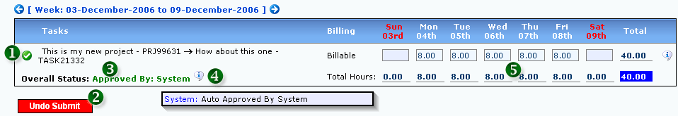

<table class="no-border" cellpadding=3 cellspacing=3>
<tr><td>
	<H1>1. Submitted Timesheet</H1>
	A submitted timesheet page will look similar to Figure 1 below.
	<pre align="left">     
	<strong>Figure 1: Submitted Timesheet</strong></pre>
	<ol>
		<li><strong>1. CURRENT STATUS:</strong> The current status of the Task / Timeoff (Approved / Pending / Rejected)</li>
		<li><strong>2. UNDO SUBMISSION:</strong> Click "Undo Submit" to Undo the timesheet submission</li>
		<li><strong>3. OVERALL STATUS:</strong> The overall status of the Task / Timeoff (Approved / Pending / Rejected)</li>
		<li><strong>4. COMMENT BOX:</strong> Mouseover the Comment Box icon to show the comment</li>
		<li><strong>5. DAILY HOURS:</strong> Total daily hours</li>
	</ol>
</td></tr>
</table>